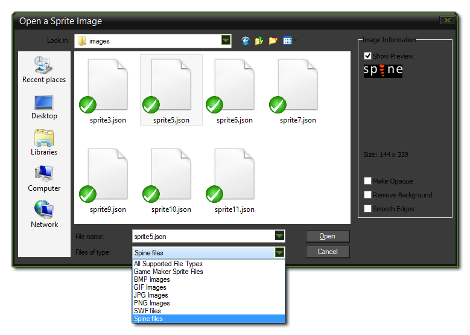
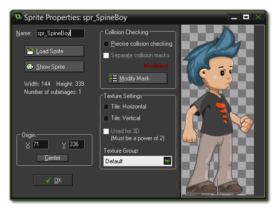

A sprite made using skeletal animation, is one in which a base "skeleton" has been created and animated using key-frames to move the component parts of the skeleton over time. This skeleton is then skinned from a texture atlas and the resulting animation exported in one of many file types. Gamemaker:Studio permits you to import this type of sprite as long as it has been exported as a *.json format file and has the correctly associated texture atlas file (*.atlas) and image file (as a *.png) in the same directory.
IMPORTANT: GameMaker: Studio only supports a single texture atlas per sprite.
NOTE: This feature currently only supports files created using the program Spine.
Currently GameMaker: Studio can only import vector images from JSON format files made by the program Spine, however the way to import them into the program is almost identical
to that for adding a normal bitmap image. To add a skeletal animation, you need to create a new sprite, which will bring up the standard
Load Sprite dialogue, but make sure that you have selected *.json from the file filter at the bottom.

Hitting the "load" button will add the skeletal animation to the resource tree as a sprite, with a progress bar being shown as the file is processed. Note that, depending on the complexity of the file, this may take a
moment or two. When processing has finished you'll be returned to the sprite properties dialogue, which will now look like this:

Once you have imported the animation, you can set the collision properties, but note that you are limited here to simply using precise collisions or bounding box collisions, and that the collision data for a skeletal
animation is explicitly taken from the data provided. GameMaker: Studio does not generate any collision mask if the data is missing from imported file, meaning you simply won't get working collisions if
the masks are not set correctly in the program used to create the image being imported.
NOTE: Due to the complexity of skeletal animations, the preview image shown in the sprite editor is not intended to accurately represent your animation, but rather give you a simple image that represents the animation for visualising in the room editor.
Unlike bitmap sprites, the imported skeletal animation sprite cannot be modified in the editor in any way, but there are a number of functions available within the GameMaker Language (GML) which can be used to
change skins, set properties, and control other aspects of the animation.
There are a number of things that you should be aware of when importing skeleton animation sprites, with the most important being that some of the sprite drawing and sprite management functions are not
supported for technical reasons, particularly those draw functions that draw only part of a sprite, or that "skew" the position in some way (see the individual
draw_sprite_*() functions for exact details of which). However the basic sprite drawing functions are fully
supported as are the built in sprite variables. Apart from these functions and variables, you can also set
and change animation properties using special skeleton_* functions, which are listed and explained in the reference section on
Skeletal Animations.